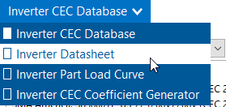
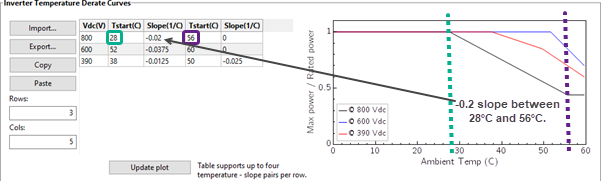
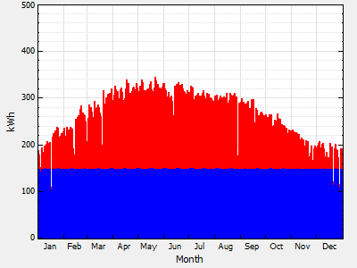
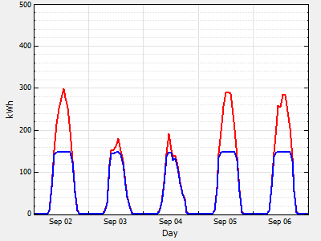
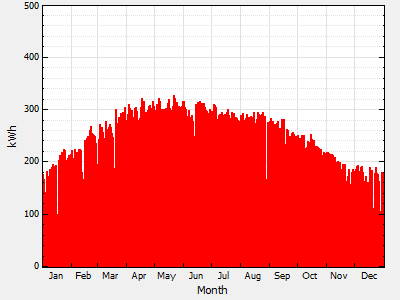
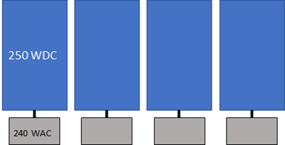

Inverter#
The Inverter page allows you to choose a model to represent the inverter’s performance. The inverter converts DC electricity from the photovoltaic array into AC electricity. The inverter model calculates the DC to AC conversion efficiency in each simulation time step.
SAM can only model a photovoltaic system with a single type of inverter. Specify the number of inverters in the system on the System Size page.
You can choose from four different inverter model options. SAM displays the name of the current option in the blue box at top of the Inverter page. Click the box to choose a different option:

Inverter CEC Database calculates the system’s AC output using the Sandia inverter model with data from the CEC database, which is a library of inverter parameters. Use this model for most analyses.
Inverter Datasheet allows you to specify the inverter’s parameters using values from a manufacturer’s data sheet, and calculates coefficients for the Sandia inverter model from the parameters you provide. Use this model for an inverter that is not in the CEC database.
Inverter Part Load Curve allows you to specify a table of part-load efficiency values for an inverter using data from a manufacturer’s data sheet or other source. Use this model when you have the inverter’s part-load efficiency data.
Inverter CEC Coefficient Generator generates coefficients for the Sandia inverter model when you have inverter test data.
For a technical description of the inverter model options, see Gilman, P.; Dobos, A.; DiOrio, N.; Freeman, J.; Janzou, S.; Ryberg, D. (2018) SAM Photovoltaic Model Technical Reference Update. 93 pp.; NREL/TP-6A20-67399 available along with other technical documentation from the SAM website.
Inverter CEC Database#
The Inverter CEC Database model is an implementation of the Sandia Model for Grid-Connected PV Inverters (Sandia inverter model). It is an empirically-based performance model that uses parameters from a database of commercially available inverters maintained by the California Energy Commission (CEC).
The Sandia inverter model is described in the following documents:
King D et al (2007) Performance Model for Grid-Connected Photovoltaic Inverters, Sandia National Laboratories, SAND2007-5036 (PDF 1.3 MB)
Gilman, P. et al (2018). SAM Photovoltaic Model Technical Reference. National Renewable Energy Laboratory Update. NREL/TP-6A20-67399. (Available on the SAM website.)
The CEC inverter test protocol is described in:
Bower W et al (Draft 2004) Performance Test Protocol for Evaluating Inverters Used in Grid-Connected Photovoltaic Systems (PDF 584 KB)
Note
The inverter library stores data from the California Energy Commission Solar Equipment List Program as of the date of the SAM software release.
For scripts and data NLR uses to generate the inverter library, see NatLabRockies/SAM.
If you represent an inverter manufacturer and would like to add equipment to the list, you should contact the California Energy Commission (CEC).
To use the Inverter CEC Database model:
On the Inverter page, choose Inverter CEC Database from the list at the top of the page.
Choose an inverter from the list of available inverters. You can type a few letters of the manufacturer or inverter name in the Search box to filter the list.
To model an inverter that is not in the list, you can use the Inverter Datasheet model with values from a manufacturer’s data sheet.
To modify parameters, for an inverter that is in the list, choose the inverter whose parameters you want to modify from the library, and then switch the model option at the top of the Inverter page from Inverter CEC Database to Inverter Datasheet and click Copy specifications. This will copy the parameter values from the library to inputs that you can edit.
Efficiency Curve and Characteristics#
When you choose an inverter from the list, SAM displays parameters from the list and calculates and displays inverter efficiency curves.
- CEC weighted efficiency and European weighted efficiency, %
SAM calculates and displays both the CEC weighted efficiency and European weighted efficiency for your reference. It does not use these efficiency values during a simulation. To calculate the efficiencies, SAM calculates the inverter’s nominal efficiency at seven different power levels, and applies the set of weighting factors for the CEC and European methods of calculating the weighted efficiency.
Datasheet Parameters#
- Maximum AC power, Wac
Maximum output AC power at reference or nominal operating conditions. Available from manufacturer specifications.
- Maximum DC power, Wdc
Input DC power level at which the inverter’s output is equal to the maximum AC power level. Available from manufacturer specifications.
- Power consumption during operation, Wdc
DC power required for the inverter to start converting DC electricity to AC. Also called the inverter’s self-consumption power. Sometimes available from manufacturer specifications, and not to be confused with the nighttime AC power consumption.
- Power consumption at night, Wac
AC power consumed by the inverter at night to operate voltage sensing circuitry when the photovoltaic array is not generating power. Available from manufacturer specifications.
- Nominal AC voltage, Vac
Rated output AC voltage from manufacturer specifications.
- Maximum DC voltage, Vdc
The inverter’s maximum DC input voltage rating.
This value does not affect simulation results. The maximum DC voltage is often shown on manufacturer datasheets, but is not provided in the data from the California Energy Commission. The value in the inverter library is equal to the maximum MPPT DC Voltage value from the database.
- Maximum DC current, Adc
The maximum DC voltage input, typically at or near the photovoltaic array’s maximum power point current.
- Minimum MPPT DC voltage, Vdc
Manufacturer-specified minimum DC operating voltage.
- Nominal DC voltage, Vdc
The nominal, or design input voltage.
- Maximum MPPT DC voltage, Vdc
Manufacturer-specified maximum DC operating voltage.
Important
You can modify the MPPT voltage ratings on the System Size page. SAM uses the values from the System Design page to calculate voltage clipping losses and to display sizing messages.
Sandia Coefficients#
The four coefficients C0..C3 are empirically-determined coefficients that are inputs to the Sandia inverter model. Manufacturers do not provide these coefficients on inverter datasheets.
- C0, 1/V
Defines the relationship between AC and DC power levels at the reference operating condition.
- C1, 1/V
Defines the value of the maximum DC power level.
- C2, 1/V
Defines the value of the self-consumption power level.
- C3, 1/V
Defines the value of Coefficient C0.
Inverter Temperature Derate Curves#
Temperature derating is an inverter function that decreases inverter power to prevent heat-related damage to internal components when the ambient temperature increases above a pre-defined value. SAM uses the information from the inverter temperature derate curves with ambient temperature data from the weather file to adjust the inverter efficiency in each time step of the simulation. As ambient temperature increases, the inverter efficiency decreases based on the data in the table. You can see the effect of inverter temperature derating using the following results variables:
Inverter thermal derate DC power loss (kWh/yr)
DC inverter thermal derate loss (%)
Inverter thermal derate DC power loss (kW)
SAM adjusts the inverter efficiency based on the ambient temperature in the weather file based on the Efficiency - Ambient Temperature curve under Inverter Temperature Derate Curves. The default curve decreases the inverter efficiency as the ambient temperature increases above 52.8 degrees Celsius at a rate of 0.021% per degree of temperature increases. You can edit the values in the efficiency table to change the shape of the curve.
Temperature derating data is not included in the inverter library, but may be available on the inverter manufacturer datasheet. The default generic temperature derating curve is for an inverter that starts derating when the ambient temperature reaches 50°C at 1300 Vdc and shuts the inverter down when the ambient temperature reaches 55°C. You can use the default data if you do not expect the inverter to be exposed to high temperatures.
The following example shows SAM derating data for the inverter described in the SMA technical document “SUNNY BOY / SUNNY TRIPOWER Temperature Derating” available at https://files.sma.de/downloads/Temp-Derating-TI-en-15.pdf.

- Vdc (V)
The inverter operating DC voltage for each temperature derating curve. Assign one row for each voltage level. The table must include at least one Vdc value. Change the value of Rows to add or remove rows.
- Tstart (C)
The temperature at which inverter derating starts for the given Vdc. To add a temperature-slope pair, add two columns to the table. Change the value of Cols to add or remove columns.
- Slope (1/C)
The inverter efficiency rate of change beginning at the given Tstart.
- Rows
Determines the number of voltage levels. Must be at least 1.
- Cols
Determines the number of Tstart/Slope pairs. Acceptable values are 3, 5, 7 and 9 for up to four pairs.
- Update plot
After changing values in the table, click Update plot to change the graph.
Note
To avoid excessive temperature derating losses for large inverters, make sure the highest Vdc voltage value in the temperature derate curves is greater than or equal to the inverter’s maximum VDC voltage rating.
The temperature derating model is not part of the original Sandia Performance Model for Grid-Connected Photovoltaic Inverter. It is a special implementation for SAM’s Detailed PV model.
Inverter Datasheet#
The Inverter Datasheet model is an implementation of the Sandia Model for Grid-Connected PV Inverters that allows you to model an inverter by entering data from a manufacturer’s data sheet.
The Inverter Datasheet model consists of a set of equations that SAM uses to calculate the inverter’s hourly AC output based on the DC input (equivalent to the electrical output of the photovoltaic array) and performance parameters from the inverter manufacturer’s datasheet. The model works by setting the C coefficients of the Sandia inverter model to zero.
Note
If you have a table of part-load efficiency values for the inverter, you may want to use the Inverter Part Load Curve model instead of the Inverter Datasheet model. If you have CEC test data for the inverter, you can use the Inverter Coefficient Generator.
To use the Inverter Datasheet model:
On the Inverter page, choose Inverter Datasheet from the list at the top of the page.
Enter input values from the manufacturer’s data sheet. See below for descriptions of the inputs.
Power Ratings#
- Maximum AC output power
The inverter’s rated maximum AC output in Watts. Manufacturers may use different names for this value, such as continuous output power, rated active power, peak output, etc.
- Weighted efficiency and Manufacturer efficiency
Inverter manufacturers provide different efficiency ratings on their product data sheets. SAM can model the inverter using either a weighted efficiency or a nominal efficiency. If the manufacturer provides a weighted efficiency, you should use it rather than the nominal efficiency. The weighted efficiency more accurately reflects the inverter’s performance under different operating conditions.
If you choose Weighted efficiency, you can use the weighted efficiency calculated with either the European or CEC method. The European method is best for locations with lower solar resource where the inverter operates more often at lower load levels. The CEC method is best for sunnier locations where the inverter operates at higher load levels. See Weighted Efficiency for more details.
If you choose Manufacturer efficiency, you can use either a peak efficiency or another efficiency value from the data sheet that represents the inverter’s efficiency at a single load level. You should also specify a value for Power consumption during operation to improve the accuracy of the model at low power levels.
- Maximum DC input power
SAM calculates and displays the equivalent rated DC input capacity based on the maximum AC output power and efficiency value that you specify (either weighted or nominal):
Maximum DC Input Power (Wdc) = Maximum AC Output Power (Wac) ÷ Efficiency (%) × 100%
SAM uses the maximum DC input power value to size the array when you choose Specify desired array size on the System Size page, and to display sizing messages when you choose Specify modules and inverters.
Operating Ranges#
SAM uses the operating range variables to help you size the system on the System Size page.
- Nominal AC operating voltage
The inverter’s nominal AC output voltage.
- Maximum DC voltage
The inverter’s maximum input DC voltage. This value does not affect simulation results. The maximum DC voltage is often shown on manufacturer datasheets. You can set it equal to the maximum MPPT DC Voltage.
- Maximum DC current
The inverter’s maximum input DC current.
- Minimum MPPT DC voltage
The inverter’s minimum DC operating voltage.
- Nominal DC voltage
The inverter’s nominal DC operating voltage.
- Maximum MPPT DC voltage
The inverter’s maximum DC operating voltage.
Important
You can modify the MPPT voltage ratings on the System Size page. SAM uses the values from the System Design page to calculate voltage clipping losses and to display sizing messages.
Losses#
The two loss variables account for electricity consumed by inverter components during operation and to keep the inverter in standby mode at night when the array is not generating electricity.
When you specify the inverter’s efficiency using a weighted efficiency, you only need to specify a value for the night-time power consumption because the weighting factors account for the power consumption during operation.
SAM displays a suggested value for each loss variable, which is based on an analysis of the loss parameters for the inverters in the SAM 2013.1.5 CEC library, and should be a reasonable approximation for inverters currently available on the market. If the manufacturer does not provide values for the inverter’s power consumption, you can use the suggested value. (You must type the value in the input box, SAM does not automatically assign the suggested value to the variable.)
- Power consumption during operation
Electricity consumed by the inverter during the day when the photovoltaic array is generating power. SAM disables this variable when you specify a weighted efficiency.
SAM calculates the suggested value using the following equation:
Suggested Value for Consumption during Operation (Wdc) = 0.8% × Maximum AC Output Power (Wac)
- Power consumption at night
Electricity consumed by the inverter during the night when the photovoltaic array is not generating power. This value is sometimes also called tare loss or standby loss.
SAM calculates the suggested value using the following equation:
Suggested Value for Consumption at Night (Wac) = 0.025% × Maximum AC Output Power (Wac)
Copy Inverter Specifications from Current Library Selection#
Use the Copy specifications button to overwrite inverter parameters with data from the Inverter CEC Database option to the Inverter Datasheet option:
Choose Inverter CEC Database from the model option list at the top of the Inverter page.
Choose the inverter whose parameters you want to copy from the library.
Choose Inverter Datasheet and click Copy specifications.
Save / Load Data#
Use the Save to file and Load from file buttons to save the module parameters to a text file that you can use to share data between different SAM files. SAM saves a list of variable name, values, and labels in a simple comma-separated format.
Inverter Temperature Derate Curves#
Temperature derating is an inverter function that decreases inverter power to prevent heat-related damage to internal components when the ambient temperature increases above a pre-defined value. SAM uses the information from the inverter temperature derate curves with ambient temperature data from the weather file to adjust the inverter efficiency in each time step of the simulation. As ambient temperature increases, the inverter efficiency decreases based on the data in the table. You can see the effect of inverter temperature derating using the following results variables:
Inverter thermal derate DC power loss (kWh/yr)
DC inverter thermal derate loss (%)
Inverter thermal derate DC power loss (kW)
SAM adjusts the inverter efficiency based on the ambient temperature in the weather file based on the Efficiency - Ambient Temperature curve under Inverter Temperature Derate Curves. The default curve decreases the inverter efficiency as the ambient temperature increases above 52.8 degrees Celsius at a rate of 0.021% per degree of temperature increases. You can edit the values in the efficiency table to change the shape of the curve.
Temperature derating data is not included in the inverter library, but may be available on the inverter manufacturer datasheet. The default generic temperature derating curve is for an inverter that starts derating when the ambient temperature reaches 50°C at 1300 Vdc and shuts the inverter down when the ambient temperature reaches 55°C. You can use the default data if you do not expect the inverter to be exposed to high temperatures.
The following example shows SAM derating data for the inverter described in the SMA technical document “SUNNY BOY / SUNNY TRIPOWER Temperature Derating” available at https://files.sma.de/downloads/Temp-Derating-TI-en-15.pdf.
- Vdc (V)
The inverter operating DC voltage for each temperature derating curve. Assign one row for each voltage level. The table must include at least one Vdc value. Change the value of Rows to add or remove rows.
- Tstart (C)
The temperature at which inverter derating starts for the given Vdc. To add a temperature-slope pair, add two columns to the table. Change the value of Cols to add or remove columns.
- Slope (1/C)
The inverter efficiency rate of change beginning at the given Tstart.
- Rows
Determines the number of voltage levels. Must be at least 1.
- Cols
Determines the number of Tstart/Slope pairs. Acceptable values are 3, 5, 7 and 9 for up to four pairs.
- Update plot
After changing values in the table, click Update plot to change the graph.
Note
To avoid excessive temperature derating losses for large inverters, make sure the highest Vdc voltage value in the temperature derate curves is greater than or equal to the inverter’s maximum VDC voltage rating.
The temperature derating model is not part of the original Sandia Performance Model for Grid-Connected Photovoltaic Inverter. It is a special implementation for SAM’s Detailed PV model.
Inverter Part Load Curve#
The Inverter Part Load Curve model allows you to model an inverter by entering part-load efficiency and other data from a manufacturer’s data sheet. Unlike the CEC Database and Inverter Datasheet inverter models, this model is not based on the Sandia inverter model. Instead, it determines the inverter’s hourly conversion efficiency based on the part-load efficiency data points and night-time loss values you provide.
Note
If you do not have a table of part-load efficiency values for the inverter, you may want to use the Inverter Datasheet model instead of the Part Load Curve model.
To use the Inverter Part Load Curve model:
On the Inverter page, choose Inverter Part Load Curve.
Type a value for the Maximum AC output power, and choose CEC efficiency or European efficiency.
Type values for the Operating Ranges input variables and for Power consumption at night loss.
Type values in the part-load efficiency table and for the operating range input variables.
See below for descriptions of the variables, and more detailed instructions for working with the part-load efficiency table.
Power Ratings#
- Maximum AC output power
The inverter’s rated maximum AC output in Watts. Manufacturers may use different names for this value, such as continuous output power, rated active power, peak output, etc.
- CEC efficiency and European efficiency
Specify the inverter’s weighted efficiency calculated with either the European or CEC method. The European method is best for locations with lower solar resource where the inverter operates more often at lower load levels. The CEC method is best for sunnier locations where the inverter operates at higher load levels. See Weighted and Manufacturer Efficiency Values for more details.
- Maximum DC input power
SAM calculates and displays the equivalent rated DC input capacity based on the maximum AC output power and efficiency value that you specify (either weighted or nominal):
Maximum DC Input Power (Wdc) = Maximum AC Output Power (Wac) ÷ Efficiency (%) × 100%
SAM uses the maximum DC input power value to size the array when you choose Specify desired array size on the System Size page, and to display sizing messages when you choose Specify modules and inverters.
Operating Ranges#
SAM uses the operating range variables to help you size the system on the System Size page.
- Nominal AC operating voltage
The inverter’s nominal AC output voltage.
- Maximum DC voltage
The inverter’s maximum input DC voltage.
- Maximum DC current
The inverter’s maximum input DC current.
- Minimum MPPT DC voltage
The inverter’s minimum DC operating voltage.
- Nominal DC voltage
The inverter’s nominal DC operating voltage.
- Maximum MPPT DC voltage
The inverter’s maximum DC operating voltage.
Important
You can modify the MPPT voltage ratings on the System Size page. SAM uses the values from the System Design page to calculate voltage clipping losses and to display sizing messages.
Losses#
The two loss variables account for electricity consumed by inverter components to keep the inverter in standby mode at night when the array is not generating electricity.
- Power consumption at night
Electricity consumed by the inverter during the night when the photovoltaic array is not generating power. This value is sometimes also called tare loss or standby loss.
Part Load Efficiency#
SAM uses the part-load efficiency table you specify to determine the inverter’s efficiency during a simulation. You can either type values in the table by hand, import values to the table from a properly formatted text file, or paste data to the table from your computer’s clipboard.
SAM uses linear interpolation to calculate efficiency values for output power levels between the points in the table. If you specify only a single row, SAM assumes that the inverter’s efficiency is constant over its full output power range.
Save / Load Data#
Use the Save to file and Load from file buttons to save the module parameters to a text file that you can use to share data between different SAM files. SAM saves a list of variable name, values, and labels in a simple comma-separated format.
Inverter Temperature Derate Curves#
Temperature derating is an inverter function that decreases inverter power to prevent heat-related damage to internal components when the ambient temperature increases above a pre-defined value. SAM uses the information from the inverter temperature derate curves with ambient temperature data from the weather file to adjust the inverter efficiency in each time step of the simulation. As ambient temperature increases, the inverter efficiency decreases based on the data in the table. You can see the effect of inverter temperature derating using the following results variables:
Inverter thermal derate DC power loss (kWh/yr)
DC inverter thermal derate loss (%)
Inverter thermal derate DC power loss (kW)
SAM adjusts the inverter efficiency based on the ambient temperature in the weather file based on the Efficiency - Ambient Temperature curve under Inverter Temperature Derate Curves. The default curve decreases the inverter efficiency as the ambient temperature increases above 52.8 degrees Celsius at a rate of 0.021% per degree of temperature increases. You can edit the values in the efficiency table to change the shape of the curve.
Temperature derating data is not included in the inverter library, but may be available on the inverter manufacturer datasheet. The default generic temperature derating curve is for an inverter that starts derating when the ambient temperature reaches 50°C at 1300 Vdc and shuts the inverter down when the ambient temperature reaches 55°C. You can use the default data if you do not expect the inverter to be exposed to high temperatures.
The following example shows SAM derating data for the inverter described in the SMA technical document “SUNNY BOY / SUNNY TRIPOWER Temperature Derating” available at https://files.sma.de/downloads/Temp-Derating-TI-en-15.pdf.
- Vdc (V)
The inverter operating DC voltage for each temperature derating curve. Assign one row for each voltage level. The table must include at least one Vdc value. Change the value of Rows to add or remove rows.
- Tstart (C)
The temperature at which inverter derating starts for the given Vdc. To add a temperature-slope pair, add two columns to the table. Change the value of Cols to add or remove columns.
- Slope (1/C)
The inverter efficiency rate of change beginning at the given Tstart.
- Rows
Determines the number of voltage levels. Must be at least 1.
- Cols
Determines the number of Tstart/Slope pairs. Acceptable values are 3, 5, 7 and 9 for up to four pairs.
- Update plot
After changing values in the table, click Update plot to change the graph.
Note
To avoid excessive temperature derating losses for large inverters, make sure the highest Vdc voltage value in the temperature derate curves is greater than or equal to the inverter’s maximum VDC voltage rating.
The temperature derating model is not part of the original Sandia Performance Model for Grid-Connected Photovoltaic Inverter. It is a special implementation for SAM’s Detailed PV model.
Tips for Working with the Part-load Efficiency Table#
To clear the table, change Rows to 1, and then change it to the number of rows in your data set.
Double click a cell to select it.
Use the Tab and Shift-Tab keys to move between columns.
Use the Enter key to move down a column.
If you type a non-numeric character, SAM replaces the character with a zero.
To specify the part-load efficiency curve using the table:
Under Rows, type the number of data points you want to include in the table. You must specify at least one row of values in the table.
For each row in the table, type a value for output power as a percentage of the inverter’s rated capacity, and a DC to AC conversion efficiency value as a percentage.
SAM displays the part-load efficiency curve in the plot area as you type values in the table.
To import part-load efficiency data from a text file:
Prepare a text file of comma-separated values. The file should have one line for each output-efficiency value pair separated by a comma with no header rows. For example:
0,0 10,96.1 20,97.55 30,97.87 …
The output percentages should increase from the first row to the last, but not necessarily in equal increments.
You can also export the efficiency data from the default flat plate photovoltaic case to see an example of what the file should look like.
Click Import.
SAM populates the part-load efficiency table with data from the file.
To paste part-load efficiency data from your computer’s clipboard:
Prepare a spreadsheet file or text file with one row for each output-efficiency pair, and output and efficiency values in separate columns or separated by a tab.
In your spreadsheet program or text editor, select the two columns containing the data. Do not include column headings or other labels or data.
In SAM, on the Inverter page under Part Load Efficiency, click Paste.
SAM populates the part-load efficiency table with data from the clipboard.
Inverter CEC Coefficient Generator#
The CEC Coefficient Generator model generates coefficients for the CEC (Sandia) inverter model from data that you provide from results of inverter performance tests.
For a description of the Sandia inverter model, see King D et al (2007) Performance Model for Grid-Connected Photovoltaic Inverters, Sandia National Laboratories, SAND2007-5036 (PDF 1.3 MB)
For a description of the protocol for the inverter performance tests, see Bower, W.; Whitaker, C.; Erdman, W.; Fitzgerald, M. (Draft 2004). Performance Test Protocol for Evaluating Inverters Used in Grid-Connected Photovoltaic Systems. (PDF 584 KB).
To use the Inverter CEC Coefficient Generator model:
On the Inverter page, choose Inverter CEC Coefficient Generator.
Enter values for Maximum AC power and populate the inverter efficiency data table.
Click Calculate Coefficients to generate the Sandia inverter model coefficients.
Enter values for the array sizing inputs.
Choose inputs to design the rest of the photovoltaic system and run a simulation.
Coefficient Generator Inputs#
These are the data from the test results.
- Maximum AC power (Wac)
The inverter’s rated maximum continuous output power in AC Watts, as defined in the test protocol Section 5.4.
- Power units
The units of power of the output power data in the efficiency data table: Choose Watts or kilowatts.
- Number of samples
The number of measured samples. The CEC test protocol requires a minimum of five samples. For each sample, SAM displays three columns in the table: Power out, Voltage in, and Efficiency.
- Calculate Coefficients
Runs the coefficient calculator. Click the button after populating the data table.
- Import / Export / Copy / Paste
Use these buttons to import data from a CSV file, or to export the data to a CSV file. To see the format of the CSV file, export the default data to a file, and then open it in a text editor or spreadsheet program.
Inverter Efficiency Data Table#
The inverter efficiency data table consists of output power and input voltage measured in Step 6 of the procedure described in Section 5.5.1 of the CEC test protocol, and the efficiency from Table 5-3 of the protocol.
Array Sizing Inputs#
SAM uses the array sizing inputs to display sizing messages on the System Design page, and to calculate inverter clipping losses.
- Pnt, W
Power in Watts consumed at night when the inverter is not converting power. It is defined in Section 5.7 of the CEC test protocol as the AC power from the grid required to operate the inverter in standby mode.
- Vdcmax
The maximum input voltage specified by the inverter manufacturer, from Table 5-2 of the CEC test protocol.
- Idcmax
The maximum input current specified by the inverter manufacturer.
- MPPT Low and MPPT High
The operating voltage range of the maximum power point tracker, as described in Section 5.3.1.2 of the CEC test protocol.
Important
You can modify the MPPT voltage ratings on the System Size page. SAM uses the values from the System Design page to calculate voltage clipping losses and to display sizing messages.
Results - Efficiency Curve and Characteristics#
The results are the Sandia inverter model input parameters. For details, see King (2007) referenced above.
- CEC weighted efficiency and European weighted efficiency, %
SAM calculates and displays both the CEC weighted efficiency and European weighted efficiency for your reference. It does not use these efficiency values during a simulation. To calculate the efficiencies, SAM calculates the inverter’s nominal efficiency at seven different power levels, and applies the set of weighting factors for the CEC and European methods of calculating the weighted efficiency .
- Pdco, Wdc
Input DC power level at which the inverter’s output is equal to the maximum AC power level.
- Psco, Wdc
DC power required for the inverter to start converting DC electricity to AC. Also called the inverter’s self-consumption power. Sometimes available from manufacturer specifications, and not to be confused with the nighttime AC power consumption.
- Vdco, Vdc
The average of MPPT-low and MPPT-high, as described in the CEC test protocol (see reference above).
The four coefficients C0..C3 are empirically-determined coefficients calculated by the coefficient generator:
- C0, 1/V
Defines the relationship between AC and DC power levels at the reference operating condition.
- C1, 1/V
Defines the value of the maximum DC power level.
- C2, 1/V
Defines the value of the self-consumption power level.
- C3, 1/V
Defines the value of Coefficient C0.
Inverter Temperature Derate Curves#
Temperature derating is an inverter function that decreases inverter power to prevent heat-related damage to internal components when the ambient temperature increases above a pre-defined value. SAM uses the information from the inverter temperature derate curves with ambient temperature data from the weather file to adjust the inverter efficiency in each time step of the simulation. As ambient temperature increases, the inverter efficiency decreases based on the data in the table. You can see the effect of inverter temperature derating using the following results variables:
Inverter thermal derate DC power loss (kWh/yr)
DC inverter thermal derate loss (%)
Inverter thermal derate DC power loss (kW)
SAM adjusts the inverter efficiency based on the ambient temperature in the weather file based on the Efficiency - Ambient Temperature curve under Inverter Temperature Derate Curves. The default curve decreases the inverter efficiency as the ambient temperature increases above 52.8 degrees Celsius at a rate of 0.021% per degree of temperature increases. You can edit the values in the efficiency table to change the shape of the curve.
Temperature derating data is not included in the inverter library, but may be available on the inverter manufacturer datasheet. The default generic temperature derating curve is for an inverter that starts derating when the ambient temperature reaches 50°C at 1300 Vdc and shuts the inverter down when the ambient temperature reaches 55°C. You can use the default data if you do not expect the inverter to be exposed to high temperatures.
The following example shows SAM derating data for the inverter described in the SMA technical document “SUNNY BOY / SUNNY TRIPOWER Temperature Derating” available at https://files.sma.de/downloads/Temp-Derating-TI-en-15.pdf.
- Vdc (V)
The inverter operating DC voltage for each temperature derating curve. Assign one row for each voltage level. The table must include at least one Vdc value. Change the value of Rows to add or remove rows.
- Tstart (C)
The temperature at which inverter derating starts for the given Vdc. To add a temperature-slope pair, add two columns to the table. Change the value of Cols to add or remove columns.
- Slope (1/C)
The inverter efficiency rate of change beginning at the given Tstart.
- Rows
Determines the number of voltage levels. Must be at least 1.
- Cols
Determines the number of Tstart/Slope pairs. Acceptable values are 3, 5, 7 and 9 for up to four pairs.
- Update plot
After changing values in the table, click Update plot to change the graph.
Note
To avoid excessive temperature derating losses for large inverters, make sure the highest Vdc voltage value in the temperature derate curves is greater than or equal to the inverter’s maximum VDC voltage rating.
The temperature derating model is not part of the original Sandia Performance Model for Grid-Connected Photovoltaic Inverter. It is a special implementation for SAM’s Detailed PV model.
Clipping and Power Limiting#
The term “clipping” may refer to one of two inverter functions:
Power limiting occurs in time steps when the inverter’s AC power exceeds the total inverter nameplate AC capacity. During those time steps, SAM adjusts the inverter AC power to the inverter nameplate capacity (it does not adjust the inverter’s input voltage).
Voltage clipping occurs in time steps when the array DC voltage is less than the minimum maximum power-point tracking (MPPT) voltage rating or greater than the maximum MPPT voltage rating on the System Size page. In those time steps, SAM sets the array DC voltage to the inverter’s maximum or minimum MPPT voltage rating as appropriate. (SAM cannot model voltage clipping with the Sandia or Simple Efficiency module models because those models assume that the module operates at its maximum power point, and do not allow the module’s operating voltage to be changed from the maximum power point.)
Note
Inputs for MPPT voltage ratings and multiple MPPTs are on the System Size page.
After running a simulation, you can explore the effect of power limiting and voltage clipping in the PV loss diagram on the Results page or using the following output variables:
AC inverter power clipping loss (%) Year 1 power limiting loss as a percentage of total DC power output.
DC inverter MPPT clipping loss (%) Year 1 voltage clipping loss as a percentage of total DC power output.
Inverter clipping loss AC power limit (kWh/yr) Year 1 power limiting loss.
Inverter clipping loss DC MPPT voltage limits (kWh/yr) Year 1 voltage clipping loss.
Inverter clipping loss AC power limit (kW) Time series power limiting loss.
Inverter clipping loss DC MPPT voltage limits (kW) Time series voltage clipping loss.
For a complete list of detailed photovoltaic model time series outputs, see Detailed PV Model Results.
You can run the System Sizing macro to generate a detailed report about clipping losses and the inverter’s MPPT performance.
SAM reports the following simulation warning messages on the Notices tab of the Results page when inverter power limiting occurs.
- Inverter undersized
The array output is greater than inverter rated capacity for one or more of the 8,760 hours in one year. SAM reports the number of hours that the array’s simulated DC output is greater than the inverter’s AC rated capacity.
If the number of hours is small compared to the 8,760 hours in a year, you may choose to ignore the message. Otherwise, you may want to try increasing the inverter capacity.
For example, for a system with 400 kWdc array capacity and 150 kWac total inverter capacity, SAM displays the following warning message: “pvsamv1: Inverter undersized: The array output exceeded the inverter rating 157.62 kWdc for 2128 hours.”
The following time series graphs show the array’s DC output in red, and the system’s AC output in blue, indicating that the inverter capacity is limiting the system’s AC output.
This graph shows the time series data for one year:

And this one shows the same data zoomed in to five days:

- Inverter output less than 75 percent of inverter rated capacity
SAM compares the inverter’s maximum AC output to the total inverter AC capacity and displays a simulation warning if the inverter’s maximum AC output is less than 75% of the total inverter rated AC capacity.
For example, for a system with 400 kWdc array capacity and 750 kWac inverter capacity, SAM displays the following warning message: “pvsamv1: Inverter oversized: The maximum inverter output was 43.13% of the rated value 750 kWac.”
In this case, the time series graph of gross AC output shows that the inverter output never reaches the 750 kWac capacity.

Weighted Efficiency#
When you use either the Inverter Datasheet model or the Inverter Part Load Curve model, you must provide SAM with an efficiency value that determines the inverter’s maximum DC input power that SAM uses for sizing the photovoltaic array.
Inverter manufacturers often show several efficiency values on an inverter’s data sheet. Weighted efficiency values are more accurate representations of an inverter’s efficiency over a range of output levels than an efficiency value at a single operating point.
Many inverter data sheets will show two versions of the weighted efficiency value: The CEC weighted efficiency, which comes from the CEC Inverter Test Protocol and is discussed in Newmiller (2014) Sandia Inverter Performance Test Protocol Efficiency Weighting Alternatives (PDF 200 KB), or the European weighted efficiency discussed in Ongun (2013) Weighted Efficiency Measurement of PV Inverters: Introducting ηismir. The table below shows the weighting factors used to determine both versions of the weighted efficiency. In general, you should use the CEC weighted efficiency to model a system in a sunny location, and you should use the European weighted efficiency for less sunny locations. The following equation shows how the weighted efficiency is calculated, where η weighted is the weighted efficiency value, F1..F7 are shown in the table below, and η5, η10… are the inverter part-load efficiencies at 5%, 10%… of maximum AC output:
η**weighted**= F1 × η5 + F2 × η10 + F3 × η20 + F4 × η30 + F5 × η50 + F6 × η75 + F7 × η100
Weighting Factors for CEC and European Weighted Inverter Efficiencies
Percent of Inverter Maximum AC Output |
Factor |
CEC Weighting Factor |
European Weighting Factor |
|---|---|---|---|
5 |
F1 |
0.00 |
0.03 |
10 |
F2 |
0.04 |
0.06 |
20 |
F3 |
0.05 |
0.13 |
30 |
F4 |
0.12 |
0.10 |
50 |
F5 |
0.21 |
0.48 |
75 |
F6 |
0.53 |
0.00 |
100 |
F7 |
0.05 |
0.2 |
Microinverters#
A microinverter is an inverter designed to be connected to a single module. A PV system with microinverters has a single inverter for each module. Microinverters track each module’s maximum power point independently, and minimize shading and module mismatch losses associated with string inverters.
Note
SAM assumes that all modules in a given subarray operate at their maximum power point. The electrical loss associated with module voltage mismatch within a subarray is an input on the Electrical Losses page. When you model a system with microinverters, you should change the mismatch loss to zero as described in the procedure below.
SAM’s self-shading model does not account for MPPT tracking of individual modules and is not suitable for use with microinverters.
The diagram and table below represent a small system with four modules and four microinverters. You can use the same approach for large system with hundreds or thousands of modules and microinverters.
On the System Size page, Set the number of strings in parallel equal to the number of inverters, and the number of modules per string to one. You should also set the number of MPPT inputs to one.
Number of inverters |
4 |
Modules per string in subarray 1 |
1 |
Strings in parallel in subarray 1 |
4 |
Number of MPPT inputs |
1 |
This diagram shows the equivalent electrical layout:

To model a system with using microinverters in the Detailed Photovoltaic model:
On the Inverter page, choose the CEC Database inverter model. Sort inverter list by Paco to find a microinverter with a power rating suitable for your application. You can also type the first few letter of the manufacturer name to find the inverter you want to model. If your inverter is not in the list, choose the Inverter Datasheet model to enter inverter parameters from the manufacturer data sheet.
On the Module page choose a module model option, and choose a module matched with the microinverter. For the CEC Performance Model with Module Database option, you can sort the list by STC to sort the list by module power rating.
Compare the module’s maximum power (Pmp) rating to the inverter’s maximum DC power rating, and the module maximum power voltage (Vmp) to the inverter’s nominal DC voltage rating to match the components.
Consult the manufacturer data sheet or design guidelines for more specific details.
On the System Size page, choose Specify number of modules and inverters.
For Subarray 1, for Modules per String in subarray, enter 1.
To subarray 1’s Strings in Parallel in subarray, divide the system’s nameplate capacity by the module maximum power rating (Pmp) from the Module page, and round up or down as appropriate:
Strings in Parallel = System Nameplate Capacity (Wdc) / Module Maximum Power (Wdc)
Under System Size at the top of the page, for Number of Inverters, enter the value you calculated for the number of strings in parallel:
Number of Inverters = Strings in Parallel
On the Electrical Losses page, for Module Mismatch, enter zero. You can also click Microinverters to apply default loss values.
On the Installation costs page, be sure that the inverter cost is appropriate for the microinverter.
On the Soiling Shading Snow page, be sure that Self shading is set to None.